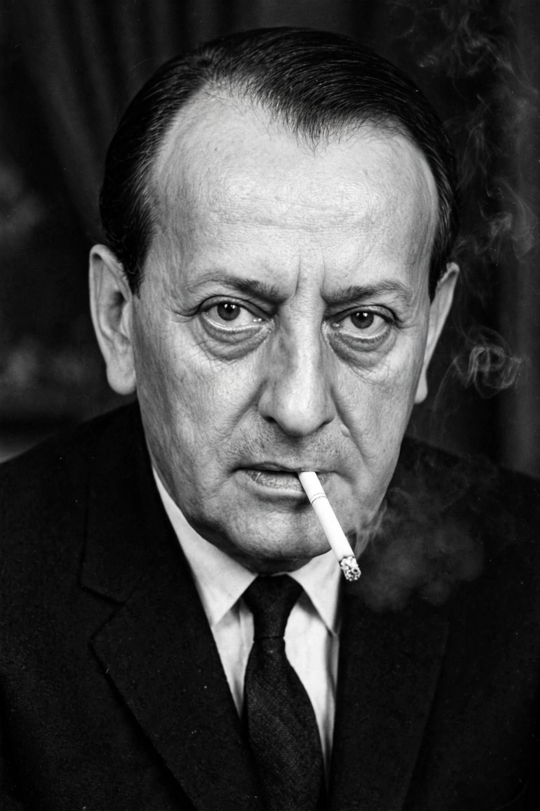

| André Malraux | |
|---|---|
 | |
| Born | 3 November 1901, Paris, France |
| Died | 23 November 1976 (aged 75), Créteil, France |
| Nationality | French |
| Occupation | Novelist, art theorist, statesman |
| Office | Minister of Cultural Affairs of France (1959–1969) |
Georges André Malraux (3 November 1901 – 23 November 1976) was a French novelist, art theorist and statesman. An adventurer in Indochina in his youth, a commander of the Republican air force in the Spanish Civil War and a Resistance leader, he became Charles de Gaulle's Minister of Information and then France's first Minister of Cultural Affairs (1959–1969), a role in which he reshaped French cultural policy and whose legacy frames later Paris museums such as the Musée du Quai Branly.
Malraux went to Indochina in 1923, where he was arrested for removing Khmer bas-reliefs from the temple of Banteay Srei — an episode that fed his early novels. His fiction of revolution and fraternity in Asia, Les Conquérants (1928), La Voie royale (1930) and La Condition humaine (Man's Fate, 1933), the last winning the Prix Goncourt, made him famous. During the Spanish Civil War he organised and commanded the Escuadrilla España for the Republic, and drew on it for the novel and film L'Espoir (1937/1939). In the Second World War he fought in the Resistance under the name Colonel Berger and commanded the Alsace-Lorraine Brigade.
As minister, Malraux created the Maisons de la culture to bring theatre and art to the provinces, ordered the cleaning of Paris's blackened monuments, protected historic quarters through the 1962 law on secteurs sauvegardés, and launched a national inventory of French art treasures. His art writings — Les Voix du silence (1951) and the idea of the "imaginary museum" (musée imaginaire), in which reproduction frees art from place — influenced museum practice worldwide.
In 1996, twenty years after his death, Malraux's ashes were transferred to the Panthéon, where Jean Zay and others of France's honoured dead rest.